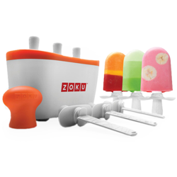
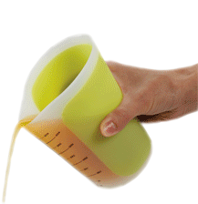
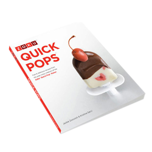
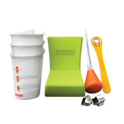

Helpful Hints and Recipes
to Enhance Your Kitchen Experience
• Gadget Demonstration Videos
• Recipes
• Tips
Gadget Demonstration Videos: Zing Anything
Click on the links below to view Zing Anything How-to Videos for the AquaZinger, CitrusZinger, and SaladZinger!
Recipes: Healthy Zoku Pop Maker Fun with Chana Rechel (Steinmetz) Jacobson
Two summers ago, my mother came to visit me, just before the birth of my youngest son, and brought me something called a Zoku Pop Maker from her store, a very cool tool for creating frozen pops in nine minutes. It is the best present I ever got. Since then, as soon as summer season begins (in Israel immediately after Pesach), we take out our Zoku “machine”, and I make fresh, nutritious popsicles for the kids every day for when they come home from school. One of my kids complains that her friends come just for the popsicles! When the school season starts again, it goes away until next summer, to keep things exciting. My mother asked me to share some of my favorite recipes, tricks and tips, so here you go!
My son is allergic to dairy, so my popsicles are all pareve (and that way I can serve them as dessert for Shabbos lunch, too). I try very hard to keep my during-the-week popsicles sugar free, so I can give them out freely without guilt! My sweetener of choice is dried date purée. I prefer this over honey, agave nectar, fruit concentrate or silan (date syrup) (and of course over artificial sweeteners), because it actually contains the entire fruit , not just concentrated sugar. When puréed adequately it is very smooth, and when mixed into foods, it has no aftertaste at all and has a very pleasant, neutral taste. You can make your own by processing 1 pound/500 grams of dried dates (make sure to remove pits and check for infestation by holding both sides to a strong light source) with a half cup of water until utterly smooth, either in a food processor or with an immersion blender (a bit messier). You can use cup for cup as you would sugar. Using date purée will give your fruit pops a sorbet-like consistency and add creaminess to ice-cream-style pops.
Pineapple Popsicles
Ingredients:
- 1 1/3 cups natural pineapple juice (I use the juice I drain from the can when I make waldorf salad!)
- Juice of half a lemon
Directions:
Place ingredients in a measuring cup (Chef'n Sleekstor Beaker works best for pouring into machine). Add water, if necessary, until you reach the 1 ½ cup line. Mix, and pour into Zoku Maker in two batches. Enjoy! Makes 6 pops.
Creamy Peach Pops:
Ingredients:
- 1 ¼ cups of peeled, sliced or cubed peaches, yellow or white
- 2 tablespoons date purée* (or orange juice concentrate, for a more citrusy flavor)
- 1 tablespoon raw, white almond butter – can omit, but pops won’t be as creamy
- 1 tablespoon lemon juice, if peaches are very sweet or to taste
Directions:
Place ingredients in a measuring cup (Chef'n Sleekstor Beaker works best for pouring into machine). Add water until you reach the 1 ½ cup line. Blend with immersion blender. Pour into Zoku Maker in two batches. Enjoy! Makes 6 pops.

Red Berry Pops:
Ingredients:
- 2/3 cup pitted or frozen red cherries
- 2/3 cup thawed frozen strawberries
- 2-3 tablespoons date purée
Directions:
Place ingredients in a measuring cup (Chef'n Sleekstor Beaker works best for pouring into machine). Add water until you reach the 1 ½ cup line. Blend with immersion blender. Pour into Zoku Maker in two batches. Enjoy! Makes 6 pops.
Note: If you want to get a little fancier, these make a great outside layer for creamsicle-style Core Pops, where the liquid inside is siphoned off as soon as the outside freezes with a special Zoku siphon or with a straw, and then filled with a vanilla flavored mixture. (In my house, these would be for Shabbos only!)
Play around with any fruit or fruit juice you may have on hand. The principle is: Fill your measuring cup half to three quarters with fruit or fruit juice, add some date purée, some lemon if too sweet, and water to reach desired quantity. Blend, pour and freeze. Some of the things I’ve tried are kiwi, concord grape juice, apricots, nectarines, mango, and even watermelon. You play around with the proportions. Less fruit/juice with more water, date and lemon can be more economical while still maintaining a very authentic, fruity taste. Be creative and have fun!
Chocolate Fudge Pops:
Ingredients:
- 2 tablespoons raw, white almond butter (you can substitute whole almond butter or hazelnut butter for slightly nuttier but probably just as yummy results!)
- 4-5 tablespoons date purée
- 1 ½ tablespoons unsweetened cocoa powder
- ½ teaspoon pure vanilla extract
- Pinch salt
Directions:
Place ingredients in a measuring cup (Chef'n Sleekstor Beaker works best for pouring into machine). Add water, until you reach the 1 ½ cup line. Whisk thoroughly with a fork, or blend with immersion blender for a super smooth consistency. Pour into Zoku Maker in two batches. Enjoy! Makes 6 pops.

Iced Coffee Pops:
Ingredients:
- 2 ½ tablespoons raw, white almond butter (I wouldn’t try this one with the whole nut butters, but you never know…)
- 4 tablespoons date purée
- ½ teaspoon pure vanilla extract
- 2 teaspoons instant granulated coffee
- Pinch salt
Directions:
Place ingredients in a measuring cup (Chef'n Sleekstor Beaker works best for pouring into machine). Add water, until you reach the 1 ½ cup line. Whisk thoroughly with a fork, or blend with immersion blender for a super smooth consistency. Pour into Zoku Maker in two batches. Enjoy! Makes 6 pops.
Peanut Butter Pops:
Ingredients:
- 3 tablespoons smooth, natural peanut butter
- 5 tablespoons date purée
- ¼ teaspoon vinegar
- Pinch salt
Directions:
Place ingredients in a measuring cup (Chef'n Sleekstor Beaker works best for pouring into machine). Add water, until you reach the 1 ½ cup line. Whisk thoroughly with a fork, or blend with immersion blender for a super smooth consistency. Pour into Zoku Maker in two batches. Enjoy! Makes 6 pops.
You can also layer this mixture with the chocolate fudge recipe, for a striped pop, but replace almond butter with natural peanut butter. Really delicious! This is what I ate for 24 hours after I had my wisdom tooth removed!